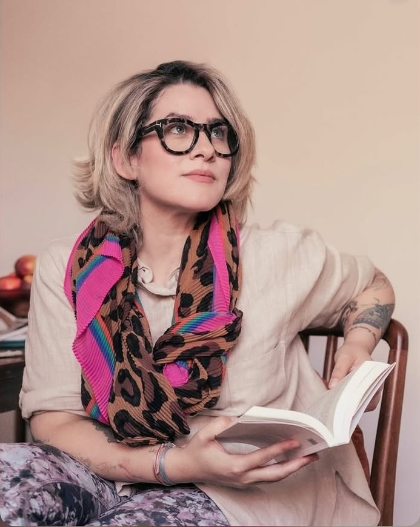
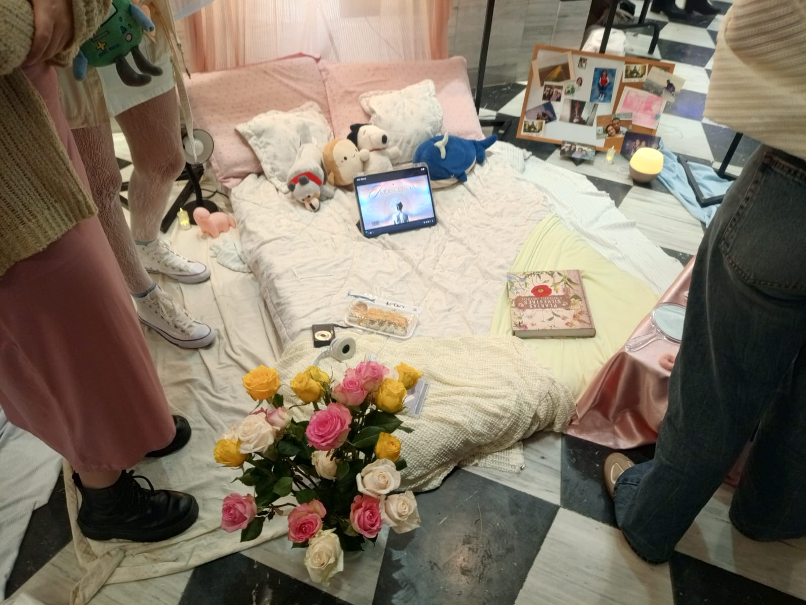
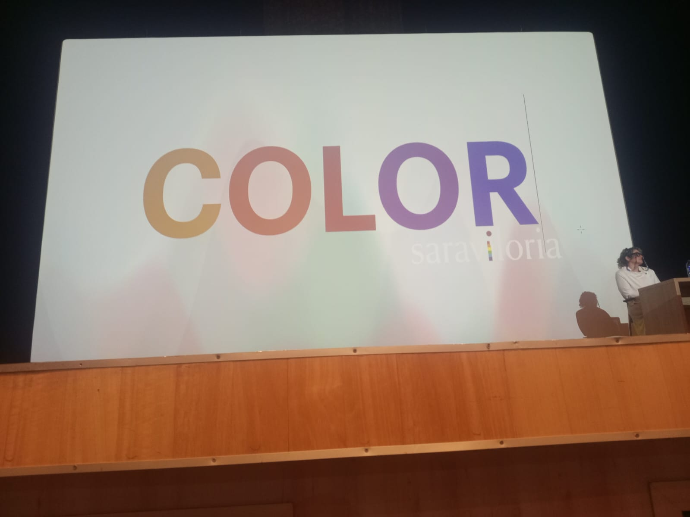

Evento de Moda y Diseño ECCI 27 de Mayo de 2026

Asistir a la charla internacional "Traigamos el Color de Vuelta" fue una experiencia muy interesante porque me permitió conocer una nueva perspectiva sobre la moda y el diseño. Antes pensaba que los colores solo servían para que algo se viera bonito, pero durante la conferencia entendí que también transmiten emociones, personalidad e incluso influyen en la forma en que las personas perciben una marca o un producto.
La participación de Sara Victoria fue inspiradora, ya que compartió conocimientos y experiencias reales de la industria creativa. Aprendí que el color es una herramienta fundamental para comunicar ideas y generar impacto visual. Además, la charla me hizo reflexionar sobre la importancia de la creatividad y la innovación en áreas como la moda, el diseño y la comunicación visual.
En general, este evento me dejó una enseñanza valiosa, ya que pude ampliar mis conocimientos, desarrollar una visión más crítica sobre el uso del color y comprender cómo pequeños detalles pueden marcar una gran diferencia en cualquier proyecto creativo.
Lo que más me llamó la atención fue descubrir que los colores pueden contar historias y transmitir emociones sin necesidad de utilizar palabras. Fue una experiencia diferente que me motivó a observar el diseño y la moda desde una perspectiva más creativa.


| Término | Definición |
|---|---|
| Teoría del Color | Estudio de cómo los colores se relacionan y generan emociones. |
| Identidad Visual | Conjunto de elementos gráficos que representan una marca. |
| Tendencia | Estilo o característica popular en una determinada época. |
| Paleta Cromática | Selección de colores utilizados en un diseño. |
| Moda | Conjunto de estilos y tendencias de vestuario de una época. |
| Diseño | Proceso creativo para desarrollar productos visuales. |
| Creatividad | Capacidad de generar ideas innovadoras y originales. |
| Innovación | Introducción de nuevas ideas o mejoras significativas. |
| Estética | Aspecto visual y atractivo de un diseño. |
| Contraste | Diferencia visual entre elementos o colores. |
| Armonía | Combinación equilibrada de elementos visuales. |
| Saturación | Intensidad o pureza de un color. |
| Tono | Color específico dentro del espectro cromático. |
| Textura | Apariencia o sensación visual de una superficie. |
| Composición | Distribución de elementos dentro de un diseño. |
| Branding | Proceso de construcción de una marca. |
| Pasarela | Espacio donde los modelos presentan colecciones de moda. |
| Diseñador | Persona encargada de crear prendas o propuestas visuales. |
| Fashion Week | Evento donde se presentan nuevas colecciones de moda. |
| Estilo | Forma particular de expresión visual o personal. |
| Imagen Corporativa | Percepción visual que transmite una organización. |
| Minimalismo | Estilo basado en la simplicidad y pocos elementos. |
| Psicología del Color | Estudio del efecto de los colores sobre las emociones. |
| Diseño Editorial | Diseño aplicado a revistas, periódicos y publicaciones. |
| Comunicación Visual | Transmisión de mensajes mediante imágenes y gráficos. |
| Inspiración | Idea o estímulo que impulsa un proceso creativo. |
| Concepto Creativo | Idea principal que guía un proyecto de diseño. |
| Imagen de Marca | Percepción que tiene el público sobre una marca. |
| Diseño Digital | Creación de contenido visual para medios digitales. |
| Color Complementario | Color opuesto en el círculo cromático que genera contraste. |
Participar en este evento fue una experiencia muy enriquecedora porque me permitió aprender cosas que antes no había considerado sobre la moda y el diseño. Gracias a la charla de Sara Victoria comprendí que el color no es simplemente un elemento decorativo, sino una herramienta capaz de transmitir emociones, ideas y mensajes que influyen en la manera en que las personas perciben el mundo que las rodea.
Uno de los aspectos que más me llamó la atención fue descubrir cómo algo tan cotidiano como la elección de un color puede tener un impacto tan grande en la identidad de una marca, en una prenda de vestir o incluso en las emociones de quienes la observan. Esto me hizo entender que detrás de cada diseño existe un proceso creativo lleno de análisis, intención y significado.
Además de ampliar mis conocimientos, esta experiencia me motivó a valorar más la creatividad y la innovación como herramientas para expresar ideas y generar cambios. Considero que actividades como esta son muy importantes para los estudiantes, ya que nos permiten acercarnos a experiencias reales, conocer diferentes perspectivas y descubrir nuevas áreas de interés para nuestro futuro académico y profesional.
Bienvenido a una experiencia inspirada en la moda, el diseño y la creatividad.
Descubre cómo el color transforma emociones, tendencias e identidades visuales.